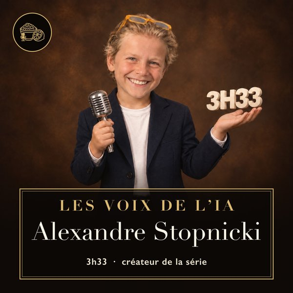

Les Voix de l'IA · Choucroute Citron
PourPierre Gilbert
1 Écoute d'abord ce message, fait pour toi · 1 min 06
puis ↓
2 Puis écoute ton portrait
Pierre Gilbert : le semeur de Sator
3 min 51 · un portrait clin d'œil des Voix de l'IA, fait pour toi
Les Voix de l'IA en une minute · 54 s

Ce qu'est devenue la série : les portraits, les familles pour chercher, le grand quiz, les parcours, et comment c'est fait. Avec ma voix… et les IA.
Les Voix de l'IA, ce sont plus de cent portraits des gens qui font la tech et l'intelligence artificielle, racontés par Ada et Alan, deux animateurs IA, avec Lia, l'IA de Choucroute Citron. Chaque fait est vérifié, avec ses sources.
Comment ce portrait a été fait
Aucun humain au micro : c'est voulu, et c'est pédagogique. Mais rien n'est laissé au hasard. Plusieurs IA cherchent dans ce qui a été publié (articles, interviews, livres, conférences) ; d'autres vérifient chaque fait, point par point, sur ses sources ; chaque phrase du texte est revérifiée, une à une, sur sa source ; puis Alexandre relit le texte et le valide avant que la moindre voix ne soit enregistrée. Aucune citation n'est inventée, et ce que l'IA imagine est toujours présenté comme tel.
Les 12 sources des phrases de ton portrait, relues une à une
- pierregilbert.fr/
- sator.fr
- recherche-entreprises.api.gouv.fr/search?q=912388386
- fr.wiktionary.org/wiki/sator
- mollat.com/livres/2428838/pierre-gilbert-geomimetisme-reguler-le-chang
- odilejacob.fr/catalogue/sciences/sciences-de-la-terre/voies-nouvelles-
- en.wikipedia.org/wiki/Institut_Rousseau
- actualitte.com/article/127170/edition/actes-sud-s-allie-a-sator-pour-d
- livreshebdo.fr/article/sator-et-actes-sud-sassocient-pour-coediter-des
- sator.fr/cours/les-cles-de-la-psyche-humaine
- fr.ulule.com/sator-animamundi/
- sator.fr/professionnels
Choucroute Citron, c'est mon podcast où des invités dialoguent en direct avec une IA : choucroute-citron.com.
Page faite pour toi, Pierre, par Alexandre Stopnicki. Oui, la voix d'Alexandre dans le message est clonée par IA : c'est lui qui l'a voulu, et c'est un peu le principe de la maison.